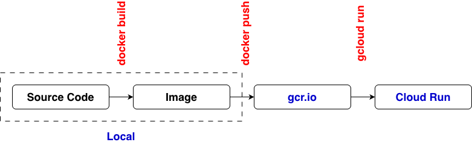

# app.py
import dash
from dash import html
from dash.dependencies import Input, Output
app = dash.Dash(__name__)
server = app.server
num_click = 0
app.layout = html.Div([
html.Button('Click', id = 'click'),
html.Div('0', id = 'content')
])
@app.callback(
Output('content', 'children'),
Input('click', 'n_clicks'))
def display_hover_data(c):
if c:
global num_click
num_click += 1
return num_click
else:
return 0
if __name__ == "__main__":
app.run(host="0.0.0.0", port=8080, debug=True)
# requirements.txt
dash
# Dockerfile
FROM python:3
WORKDIR /usr/src/app
COPY . .
RUN pip install --no-cache-dir -r requirements.txt
EXPOSE 8080
CMD ["python", "./app.py"]
# login
gcloud auth login
# select project
gcloud auth set project [PROJECT_ID]
# add a list of registries in Artifact Registry to ~/.docker/config.json
gcloud auth configure-docker
# docker build -t gcr.io/[project_id]/[image_name] .
docker build -t gcr.io/$GOOGLE_CLOUD_PROJECT/dash_app .
# docker push gcr.io/[project_id]/[image_name]
docker push gcr.io/$GOOGLE_CLOUD_PROJECT/dash_app
# build on Mac for Linux on GCP and push image to gcr.io
# docker buildx build --platform linux/amd64 -t gcr.io/projectdevenv/dash_app3 . --push
gcloud container images list
# deploy
gcloud run deploy myapp \
--image=gcr.io/$GOOGLE_CLOUD_PROJECT/dash_app \
--region=us-east1 \
--allow-unauthenticated